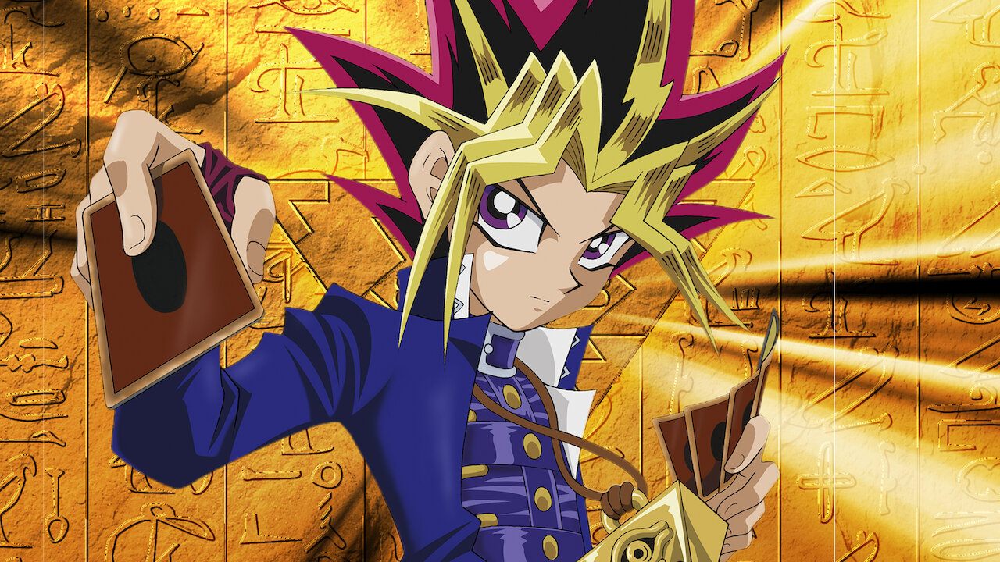

A COLEÇÃO COMEÇA AQUI
ENTRE NO
CAMPO DE
DUELO!
Monstros lendários, magias ancestrais e cartas que definem o destino de cada duelo.
EXPLORAR CARTAS ▶
DUELO!
VOL. 01
STRATEGY · POWER · DESTINYEST. 1996 — THE DUEL NEVER ENDS
遊
O UNIVERSO DO CARD GAME
ESCOLHA SUAS CARTAS. FORJE SUA LENDA.
Um catálogo para duelistas: descubra monstros, reconheça seus tipos e monte sua coleção favorita.
DATABASE // BLUE-EYES
ARQUIVO DE CARTAS
CARD
CATALOG
№ 001
CATALOG
№ 001
ARQUÉTIPO EM DESTAQUE: BLUE-EYES
Preparando o arquivo de cartas...